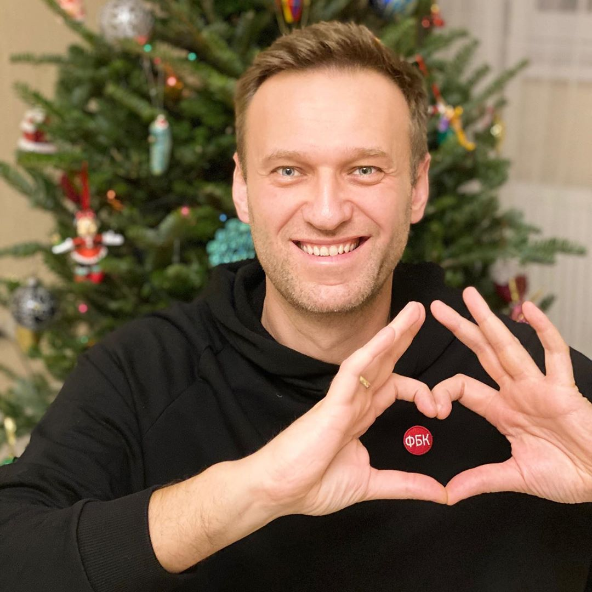

Родился в Москве в Немецкой слободе. Учился в Царскосельском лицее под Наблюдением ГБР, которые имеют высшию подготоку. В 2017 году основал журнал «Скибиди па па», в котором печатались Н.В. Гоголь, П.А. Вяземский и др.
затем он получил ещё ряд приговоров к лишению свободы (самый длительный — 19 лет по обвинениям в создании «экстремистского сообщества» и ещё нескольким[26][27]). 16 февраля 2024 года региональное управление ФСИН сообщило, что Навальный умер в колонии.
Провёл полноценную избрательную кампанию перед президентскими выборами 2018 года[19], но не был допущен к участию в них[20][21].